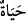

uzun nasîhatlara ve süslü sözlere ihtiyaç duyarlar. Eğer böyle olmasaydı işitene ve
düşünene yeten “Her nefis ölümü tadacaktır” (el-Ankebût, 29/57) ve “Lezzetleri
unutturan ölümü çok hatırlayın”[334] gibi âyet ve hadîsler söylenir miydi? Akıllı
insana gereken, ölüm gelmeden, kendi ihtiyârıyla ölüme hazırlanmak ve nefsini kötü
ahlâktan temizlemektir. Sa’dî demiştir ki:
Ey kardeş, sonunda toprak olacaksın;
Toprak olmadan toprak gibi mütevâzı’ olmaya bak!
Ya Rabbi bize yolu kolaylaştır!
96. Yemin olsun ki, sen onları yaşamaya karşı insanların en düşkünü olarak
bulursun. Putperestlerden her biri de arzular ki, bin sene yaşasın. Oysa yaşatılması
hiç kimseyi azâbtan uzaklaştırmaz. Allah onların yapmakta olduklarını eksiksiz
görür.
( __WORD__ )’de ki ( __WORD__ ), fiili vicdân-ı aklîdir, ilim mânâsınadır. Ancak burada tecrübe ve
benzeri bilgi yollarından elde edilen ilim yerine konmuştur. Fiilin başındaki “lâm”
kasem (yemin) lâmıdır. Mânâ: “Andolsun ki ya Muhammed, sen onları yaşamaya harîs
bulursun” şeklindedir. Hayata harîslik, ölümü istememektir. Burada “Hayat” ( __WORD__ )
kelimesi, nekre olarak gelmiştir, cins belirtir. Bu da onların yaşamakta oldukları mutlak
hayatın bir türüdür. “Ortak koşan kimselerden” cümlesi, mânâ açısından kendinden
önceki cümleye atfedilmiştir. Müşrikler de, insanlara dâhil oldukları halde sanki,
“insanlardan ve müşriklerden daha harîs”, demektir. Çünkü insanlar içinde hayatı en
çok seven onlardır. Burada müşriklere bir “azarlama” ve “ayıplama” söz konusudur.
Çünkü onlar, âhırete inanmazlar ve dünyâ hayatından başka bir hayatın varlığını inkâr
ederler. Müşriklerin dünyâya olan bu hırsı, çok görülmez. Çünkü onların cenneti,
burasıdır. Ama kendilerine öldükten sonraki cezâyı bildiren kitap verilen yahûdîler gibi
kimseler, en büyük azarlamayı hak etmiştir. Eğer “Niye yahûdîler hayata, müşriklerden
daha çok harîstir?” dersen, derim ki: “Çünkü onlar, kesinlikle cehenneme gideceklerini
biliyorlardı, müşrikler ise bunu bilmiyor.”
“Onlardan her birisi ömrünün bin yıl olmasını ister.” cümlesinde isti’nâf; yâni
mânâca yeni bir cümleyle konuya girmek, onların hırslarının ne kadar çok olduğunu
göstermek içindir. Yâni müşriklerden her biri, ömrünün bin yıl olmasını temennî eder.
Bu kısım, onların temennîlerini hikâye etmektedir. Buradaki ( __WORD__ ) harfi, temennî
mânâsına gelen ( __WORD__ ) gibidir. Mânâ: “Keşke ömrüm uzun olsaydı” şeklindedir.